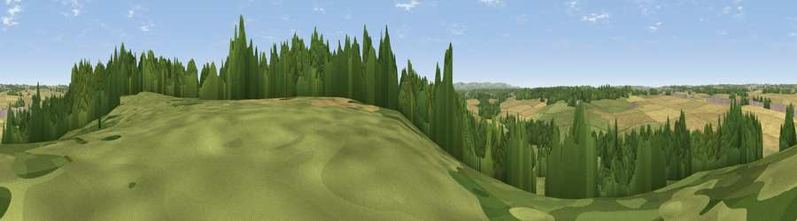

Viewpoint near Chieveley
#35242 in England · top 65% of its area beats it · near ChieveleyWhere it is
The exact computed spot (SU 46075 72025). Click the marker for map links.
The view, rendered

A 360° render of this exact spot computed from the terrain model, tree cover and land cover — summer colours, afternoon light, calibrated against photographs of famous viewpoints. Real trees, hedges and buildings will differ in detail.
The panorama
Grey silhouette: terrain skyline in each direction (720 bearings, Earth curvature and refraction included). Dashed green: skyline with trees (+15 m) and buildings (+8 m) as obstacles. Blue strip: how far the ground is visible on each bearing.
Where the view opens
Wedge length = distance to the farthest visible ground on that bearing (vegetation-aware). Rings at 10, 25 and 50 km.
What fills the view
39% grassland · 34% cropland · 26% woodland · 1% built-up
Angular shares of the visible panorama (visual magnitude), not map area. Landscape diversity 0.50 (0–1 Shannon).
Key numbers
More beautiful places nearby
The staircase of upgrades: each row has a higher view potential than everything closer. Driving times are estimates from straight-line distance, calibrated against real road routing — check an actual route before setting out.
| Place | Direction | Drive | Score |
|---|---|---|---|
| Viewpoint near Bagnor | SSW · 1 km | ~4 min | 45.4 |
| Viewpoint near Shaw | SE · 4 km | ~9 min | 46.8 |
| Viewpoint near Cold Ash | ESE · 6 km | ~12 min | 47.3 |
| Viewpoint near Cold Ash | ESE · 6 km | ~13 min | 48.8 |
| Several Down | NNE · 11 km | ~22 min | 52.1 |
| Hodcott Down | NNE · 12 km | ~22 min | 54.7 |
| Viewpoint near Farnborough | NNW · 12 km | ~23 min | 57.5 |
| Viewpoint near Compton | NE · 13 km | ~24 min | 64.1 |
51.44535, -1.33842 · source: screening · position refined by local search. Computed location — check access rights before visiting.